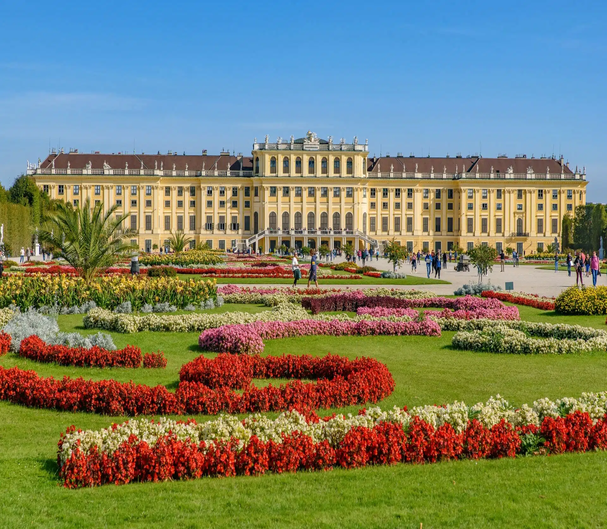

Wiedeń
Rzym ::: Warszawa ::: Wiedeń :::
Wiedeń to stolica Austrii i jedno z najważniejszych miast kulturalnych Europy. Słynie z bogatej historii, eleganckiej architektury oraz tradycji muzycznych związanych z takimi kompozytorami jak Wolfgang Amadeus Mozart czy Ludwig van Beethoven. Miasto zachwyca zabytkami, takimi jak pałac Schönbrunn czy katedra św. Szczepana, a także słynnymi kawiarniami i wyjątkową atmosferą.
Pałac Schonbrunn

Pałac Schönbrunn to jeden z najważniejszych zabytków Austrii i dawna letnia rezydencja cesarska. Został zbudowany w stylu barokowym i przez wiele lat był siedzibą rodu Habsburgów. Pałac otoczony jest rozległymi ogrodami, fontannami oraz licznymi atrakcjami, takimi jak Glorietta czy najstarsze zoo na świecie. Obecnie jest popularnym miejscem turystycznym i znajduje się na liście światowego dziedzictwa UNESCO.
Katedra św. Szczepana

Katedra św. Szczepana to jeden z najważniejszych zabytków Wiednia i symbol miasta. Zbudowana w stylu gotyckim, zachwyca wysoką wieżą oraz charakterystycznym, kolorowym dachem z wzorzystych dachówek. Wnętrze katedry kryje liczne dzieła sztuki i bogato zdobione ołtarze. Świątynia od wieków pełni ważną rolę religijną i jest jednym z najczęściej odwiedzanych miejsc w Austrii.